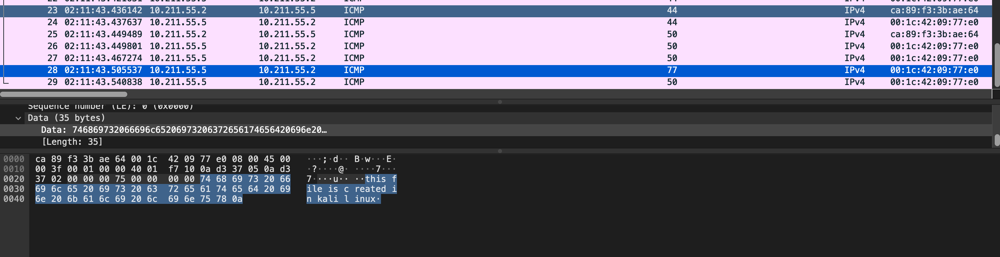

ICMP Smuggler
Personal Project exploring Data Exfiltration Techniques

This proof of concept demonstrates data exfiltration via ICMP as a covert channel.
By exploiting the ICMP payload, this POC enables the sender to craft a malicious ICMP packet to retrieve a specific file
from the target machine. The target machine, which runs the receiver, then transmits the packet back to the sender who reassembles it.
Motivation behind project
I began this project after an intriguing conversation brought back memories of an attack scenario from one of my training sessions. During that discussion, I was primarily focused on understanding attackers' actions and objectives, particularly how they manage to steal data.
While using Moloch, a network traffic analyzer, I noticed a significant increase in traffic over a specific period of time. Upon investigating further, I discovered that the data was being secretly sent out using ICMP. This led me to develop the ICMP Smuggler project, aimed at simulating and exploring how data exfiltration operates through covert channels like ICMP.
While using Moloch, a network traffic analyzer, I noticed a significant increase in traffic over a specific period of time. Upon investigating further, I discovered that the data was being secretly sent out using ICMP. This led me to develop the ICMP Smuggler project, aimed at simulating and exploring how data exfiltration operates through covert channels like ICMP.
The Goal
The ultimate goal of the ICMP Smuggler was for the sender to send a command and exfiltrate data from the receiver. In this case, the aim is to retrieve proof.txt,
which is located on the target system, and transfer it to our sender system via ICMP.
Part 1: Development of Sender.py
The sender.py project started by building and sending a special ICMP packet step by step. This part was done quickly, and I made sure it worked by checking the Wireshark data on the target system.
Knowing that plain text commands are easy to spot, I decided to encode the commands using base64. Additionally, I also implemented the ability to send commands in smaller chunks, making it tougher for blue teamers to catch on.
Part 2: Development of Receiver.py
Since I knew the receiver could receive my customized ICMP payload, I decided to use Scapy's sniff function to further process this.
This function helped me filter and decode ICMP packets. However, I faced a big challenge: if I sent data in pieces, how would I know where each piece started and ended?
To tackle this, I implemented session tracking. This way, the sender would "tell" the receiver when a packet was coming and when the transmission was finished.
Part 3: Getting sender.py to receive a response from receiver.py
As the receiver was now capable of receiving data, my focus shifted to enabling the receiver to respond. However, this proved challenging because when an ICMP Type 8 request is sent to your computer, it usually triggers an ICMP Type 0 reply. Consequently, my attempts to send a reply were constantly being interfered with by the automatic system reply.
To avoid meddling with system settings, I implemented threading in sender.py to sniff while sending the command. This approach worked well, but I needed a way to close the loop effectively. Fortunately, I came across online documentation explaining the stop filter method. I modified the program so that upon receiving the terminating sequence, it would stop sniffing and exit the program. This ensured a smoother operation without interfering with system settings.
To avoid meddling with system settings, I implemented threading in sender.py to sniff while sending the command. This approach worked well, but I needed a way to close the loop effectively. Fortunately, I came across online documentation explaining the stop filter method. I modified the program so that upon receiving the terminating sequence, it would stop sniffing and exit the program. This ensured a smoother operation without interfering with system settings.
Part 4: Piecing it all together
Now that I could send a particular command to the target and receive a specific reply, I updated the sender to send payloads using the 'get [filename]' format.
The receiver would then read the bytes of the file if it existed and send it back to the sender.
With this modification, data exfiltration was successfully achieved! Yay!
So what's next
This project has been an enjoyable journey, and it's clear that there's still much more to explore and develop.
I'm excited about delving into the IOCs and artifacts associated with this smuggler,
which will not only expand its capabilities but also deepen my understanding of its potential impact.
Additionally, I'm eager to leverage my interest in learning ReactJS to potentially create
a GUI version of this tool. This aligns perfectly with my ambitions to broaden my skillset and delve deeper into front-end development.
Overall, this project has been incredibly educational and rewarding. I've gained valuable insights and knowledge along the way, and it's been a truly fulfilling experience.
If you're curious to give it a try, feel free to check out the project on my GitHub repository (link is below). Your feedback and contributions are always welcome!